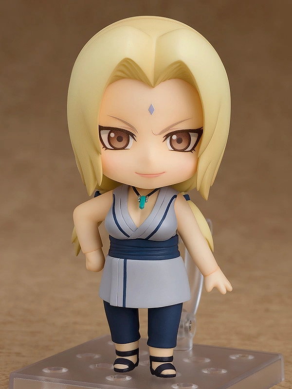
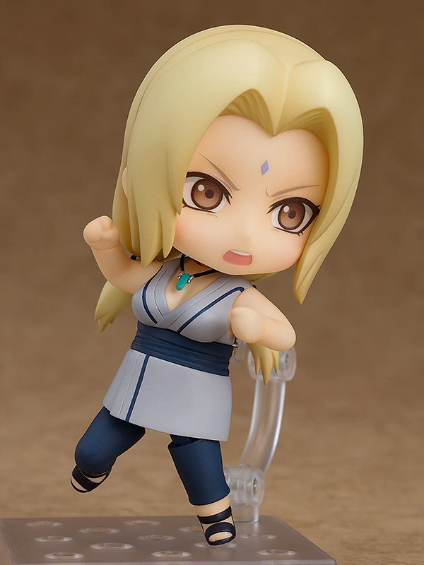
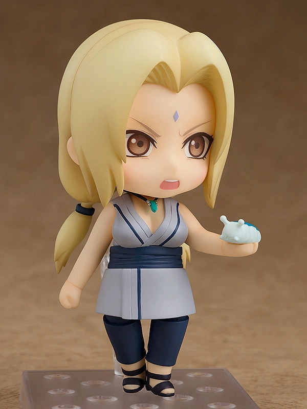

Tsunade (綱手, Tsunade) is a descendant of the Senju and Uzumaki Clan, and is one of Konohagakure's Sannin.
She is famed as the world's strongest kunoichi and its greatest medical-nin. The repeated loss of her loved ones caused Tsunade
to later abandon the life of a shinobi for many years. She is eventually persuaded to return to Konoha and take on the mantle of Fifth Hokage (五代目火影,
Godaime Hokage, literally meaning: Fifth Fire Shadow), where her skills prove invaluable to the village.


From the popular anime "Naruto Shippuden" comes a Nendoroid of Tsunade! She comes with three expressions including a
grinning expression, a courageous expression for when in battle as well as a smiling expression from when she saw Naruto's hopes for the Konoha village.
For optional parts, she comes with a version of Katsuyu, summoned for healing, and her necklace. Using the included parts you can recreate the scene of
Tsunade passing her necklace to Naruto as well as the classic running pose. Be sure to display her with the previous and upcoming characters from the
Nendoroid Naruto series!.
